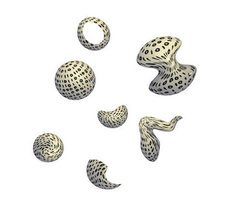
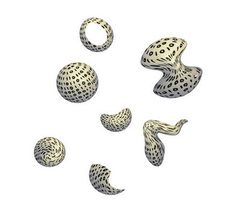

Data
- What is the Data and Metadata?
- Data Collection and Generation
- Data Types, Formats and Sources
- Download and Get the Data
- Interpretation and Visualization
- Popular Terms About Data
What is the Data and Metadata?
Data are things, known or assumed as facts, making the basis of reasoning or calculation.

Metadata is information about data.
Metadata
Sample 1
/
Sample 2

Data Collection and Generation
Data collection is the process of gathering and measuring information on targeted variables in an established system. The purpose is to answer relevant questions or/and evaluate outcomes.
- Observational
- Statistical
- Simulation

Data Types
Data Formats
- Text, Picture, Audio, Video
- File; pdf, txt, csv, html, xml, nc, hdf
- Point, Line, Polygon
- 1D, 2D, 3D, xD


Download and Get the Data
Interpretation and Visualization
Interpretation is the process of making sense of numerical data that has been collected, analyzed, and presented.
Visualization is the graphical representation of information and data.
Popular Terms About Data
- Data Analysis and EDA
- Big Data
- Data Mining
- Data Assimilation and Manipulation
- Data Scientist
Data Analysis
Data analysis is a process of inspecting, cleaning, transforming and modeling data with the goal of discovering useful information, informing conclusions and supporting decision-making.
 

Exploratory Data Analysis (EDA)
In statistics, exploratory data analysis (EDA) is an approach to analyzing data sets to summarize their main characteristics, often with visual methods.
Big Data
Too large or complex data to be dealt with by traditional data-processing application and software.

Apache Point, New Mexico, US, 1995
ALMA, Atacama, Antofagasta Region, Chile
Data Mining
Data mining is the process of discovering patterns in large data sets.


Data Assimilation and Manipulation
Data assimilation is a mathematical discipline that seeks to optimally combine theory with observations.
Data manipulation; inserting, deleting, and modifying data in a database.
Data Science
Data science is a multi-disciplinary field that uses scientific methods, processes, algorithms and systems to extract knowledge from structured and unstructured data.

Data Formats - 3th Week
Data Types
Data Set
Data Formats
Data Types
- Vector
- Point
- Line
- Polygon
Raster
Gridded
Vector Data
Vector data structures represent specific features on the Earth’s surface, and assign attributes to those features.


BONUS - Point to Polygon
Thiessen polygon


It defines an area around a point, where every location is nearer to this point than to all the others (2D).
Raster Data
Rasters are made up of a matrix of pixels (also called cells), each containing a value that represents the conditions for the area covered by that cell.

Vector vs Raster

Vector vs Raster

Vector vs Raster

Gridded Data
- A multi-dimensional rectangular or square-shaped
- The array of grid
- Borders and points which are containing values

Gridded Data


BONUS - Numerical weather prediction (NWP)
NWP uses mathematical models of the atmosphere and oceans to predict the weather based on current weather conditions.


Data Set
Observation
Forecast
Re-Analysis Data
Ensamble Data
Observation Data
The information collected by a primary source.

Forecast
The process of making predictions of the future based on past and present data.

Re-Analysis Data
A scientific method for developing a comprehensive record. Observations and a numerical model are combined objectively.

Ensamble Data
Instead of making a single forecast, a set (or ensemble) of forecasts. This set of forecasts aims to give an indication of the range of possible future states of the atmosphere.

Data Formats
ASCII (csv, txt)
netCDF
HDF
GRIB
Shapefile
ASCII
American Standard Code for Information Interchange
ASCII codes represent text in computers and other devices.
- .txt (tab-separated values)
- .csv (comma-separated values)
- .xls (excel spreadsheet)


netCDF
Network Common Data Form
A file format for storing multidimensional scientific data (variables) such as temperature, humidity, pressure, wind speed, and direction.

netCDF - .nc
NCAR (National Center for Atmospheric Research)
UCAR (University Corporation for Atmospheric Research)

HDF - .hdf
Hierarchical Data Format
Designed to store and organize large amounts of data.
National Center for Supercomputing Applications, supported by The HDF Group.

GRIB - .grib
GRIdded Binary or General Regularly-distributed Information in Binary form
Data format commonly used in meteorology to store historical and forecast weather data.
World Meteorological Organization

GRIB - .grib

Shapefile - .shp
Geospatial vector data format for geographic information system (GIS) software.
It is developed and regulated by Esri.

Shapefile - .shp